Common Problems
All Operating Systems
Removing caveData
Removing caveData (flushing the local cache) should be one of the first troubleshooting steps to take when experiencing weird behavior in CAVE. The cache lives in a folder called caveData, hence why this process is also referred to as removing or deleting caveData.
Linux
For Linux users, the easiest way is to open a new terminal and run the following command:
rm -rf ~/caveData
Windows
For Windows users, simply delete the caveData folder in your home user directory:
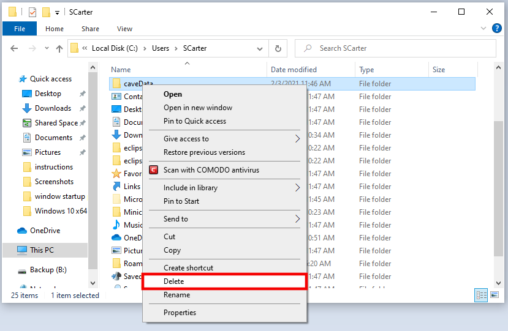
Mac
For Mac users, the easiest way is to open a new terminal and run the following command:
rm -rf ~/Library/caveData
Disappearing Configurations
If you ever notice some of the following settings you've configured/saved disappear from CAVE:
- Saved Displays or Procedures
- NSHARP settings (line thickness, etc)
- Colormap settings
- StyleRule settings
This is not a fully exhaustive list, so if something else has disappeared it might be the same underlying issue still.
Then it is likely we have recently changed our production EDEX server. There is a good chance we can recover your settings. To do so, please send a short email to support-awips@unidata.ucar.edu with the topic "Missing Configurations", and include the username(s) of the computer(s) you use to run CAVE.
Remotely Connecting to CAVE
Since the pandemic began, many users have asked if they can use X11 forwarding or ssh tunneling to remotely connect to CAVE machines. This is not recommended or supported, and CAVE crashes in many different ways and expresses strange behavior as well.
We highly recommend you download the appropriate CAVE installer on your local machine, if that is an option.
If that is not an option, then the only remote access we recommend is using some type of VNC. RealVNC and nomachine are two options that are in use with positive outcomes. UltraVNC may be another option, but may have quite a delay. There may also be other free or paid software available that we are not aware of.
It is likely that any VNC option you choose will also require some software or configuration to be set on the remote machine, and this will likely require administrative privileges.
CAVE Spring Start Up Error
If you encounter the error below, please see one of our solution methods for resolving:
CAVE's Spring container did not initialize correctly and CAVE must shut down.
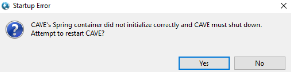
We have found the reason for this failure is because the host machine is set to use a language other than English (ie. Spanish, French, etc).
To resolve this issue, either:
- Switch your system to English, when using CAVE
or
- Use our Virtual Machine option. This option allows your actual machine to stay in whichever language you choose, while allowing you to run CAVE in an environment set to English. Although we list this installation under the Windows OS, this can also be done on Linux.
The VM option has one notable drawback at the moment -- it cannot render RGB satellite products.
Products Not Loading Properly
This problem is most commonly seen with the direct Windows installation. It can also manifest in the Mac installation (and is possible on Linux), and the root of the problem is not having Python installed properly for CAVE to use the packages.
If the Windows installation was not completed properly, it is possible to see incorrect behavior when loading certain products. These are derived products which use the local machine to create and render the data. This creation is dependent upon python and its required packages working correctly.
The dataset will be available in the menus and product browser, but when loaded, no data is drawn on the editor, but an entry is added to the legend. 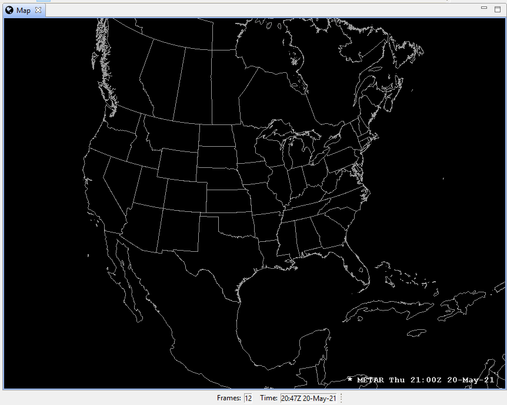
You may see an error that mentions the python package, jep.
Known datasets this can affect (this is not a comprehensive list):
- Model Winds
- Metars Winds
- METAR Station Plot
- GFS Precip Type
To correct this issue on Windows:
- Uninstall all related software (C++ Build Tools, Miniconda, Python, CAVE, pip, numpy, jep, etc)
- Redo all necessary installation instructions in steps 1 through 6
To correct this issue on Mac:
- Install the awips-python.pkg package found on step 1
To correct this issue on Linux:
- When running
which pythonfrom a terminal, make sure/awips2/python/is returned, if not, reset that environment variable, or re-run the awips_install.sh script from our installation instructions
Windows
CAVE Map Display in Lower Left Quadrant - Windows
If you start up CAVE in Windows and notice the map is showing up only in the bottom left quadrant of your display, you will just need to tweak a few display settings.
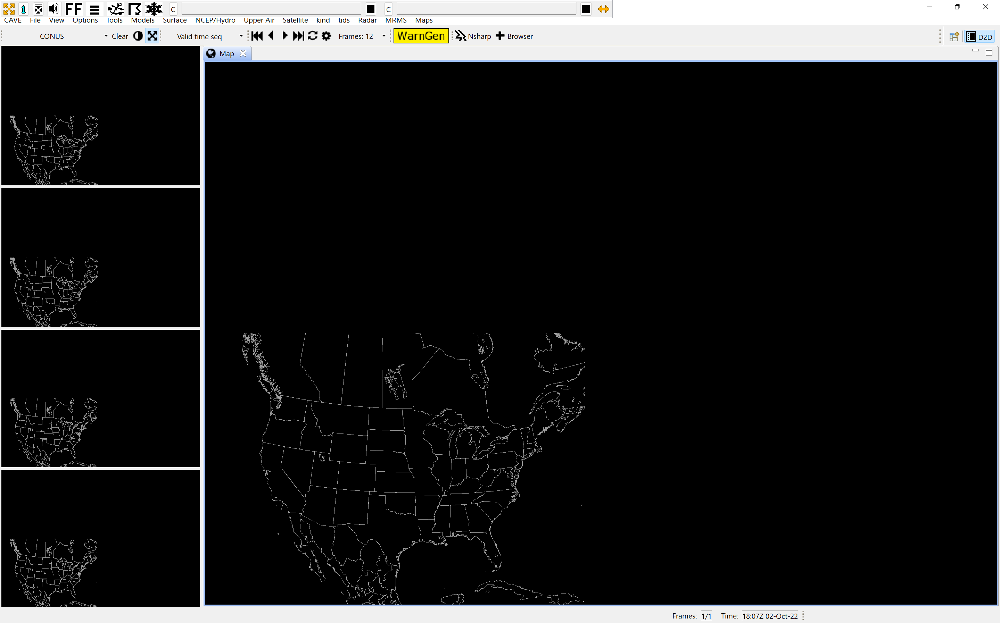
Try following these steps to fix your issue:
- Right-click on the CAVE.exe (or shortcut) icon, select Properties
- Select the Compatibility tab
- Click "Change High DPI Settings"
- At the bottom enable "Override High DPI scaling behavior"
- Change the dropdown from Application to System
Windows CAVE Start Up Error
This should no longer be an issue for our v20 release of AWIPS.
One common error some users are seeing manifests itself just after selecting an EDEX server to connect to. The following error dialogs may show up:
-
Error purging logs
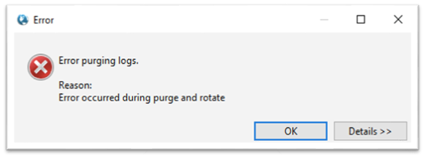 -
Error instantiating workbench: null
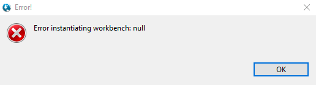
These errors are actually happening because the Windows machine is using IPv6, which is not compatible with AWIPS at this time.
To fix the issue simply follow these steps:
These screenshots may vary from your system.
These instructions are per connection, so if you use multiple connections or switch between wired and wireless connections, you'll need to do the following for each of those connections so that CAVE will always run properly.
1. Close all error windows and any open windows associated with CAVE.
2. In the Windows search field, search for "control panel".

3. Once in the Control Panel, look for "Network and Sharing Center".
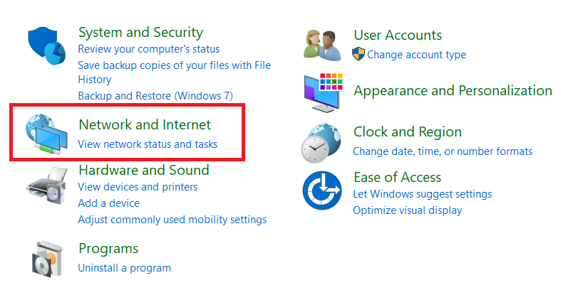 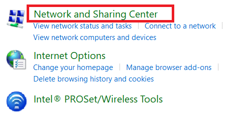
4. Select the adapter for your current connection (should be either "Ethernet" or "Wi-Fi").

5. Click on "Properties".
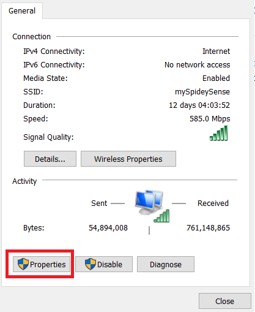
6. Uncheck "Internet Protocol Version 6 (TCP/IPv6)" and select OK.

You may need to restart your machine for this to take effect
7. Restart CAVE.
MacOS
Monterey CAVE Warning
If you are running MacOS Monterey, you may see the following message when starting CAVE:

Monterey versions 12.3 or newer will not support our production (v18) CAVE.
Please download and install our beta v20 CAVE for newer MacOS Versions to avoid this issue.
White Boxes for Surface Resources
If you do not have an NVIDIA graphics card and driver, you may see "boxes" drawn on the editor for some of the products (METARS Station Plots and Surface Winds are the resources we're aware of), as shown below:
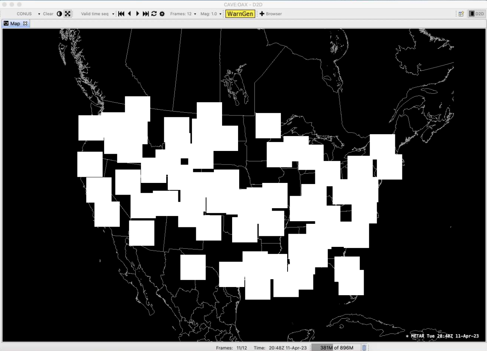
You may be able to fix this issue:
-
Check what graphics cards are available on your machine, by going to the Apple menu (far left, upper corner) > About This Mac > Overview tab (default):
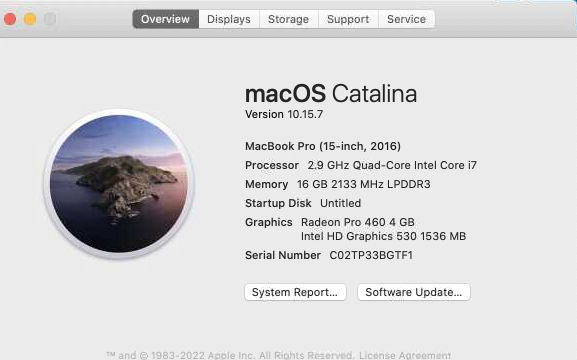
-
If you see two entries at the Graphics line, like the image shown above, then you have two graphics cards on your system. Intel graphics cards may be able to render our products properly. In this case, you can "force" your computer to use the Intel card by running the following in a terminal:
sudo pmset -[a|b|c] gpuswitch 0Where
[a|b|c]is only one of those options, which mean:- a: adjust settings for all scenarios
- b: adjust settings while running off battery
- c: adjust settings while connected to charger
The argument
0sets the computer to use the dedicated GPU (in our case above the Intel GPU).The two other options for that argument are:
- 1: automatic graphics switching
- 2: integrated GPU
It may be smart to run
pmset -gfirst, so you can see what the currentgpuswitchsetting is (likely1), that way you can revert the settings if you want them back to how they were, when not using CAVE.
Linux
Troubleshooting Uninstalling EDEX
Sometimes yum can get in a weird state and not know what AWIPS groups have been installed. For example if you are trying to remove AWIPS you may see an error:
yum groupremove "AWIPS EDEX Server"
Loaded plugins: fastestmirror, langpacks
Loading mirror speeds from cached hostfile
* base: mirror.dal.nexril.net
* elrepo: ftp.osuosl.org
* epel: mirrors.xmission.com
* extras: mirrors.cat.pdx.edu
* updates: mirror.mobap.edu
No environment named AWIPS EDEX Server exists
Maybe run: yum groups mark remove (see man yum)
No packages to remove from groups
To solve this issue, mark the group you want to remove and then try removing it again:
yum groups mark remove "AWIPS EDEX Server"
yum groupremove "AWIPS EDEX Server"
Check to make sure your /etc/yum.repos.d/awips2.repo file has enabled=1.